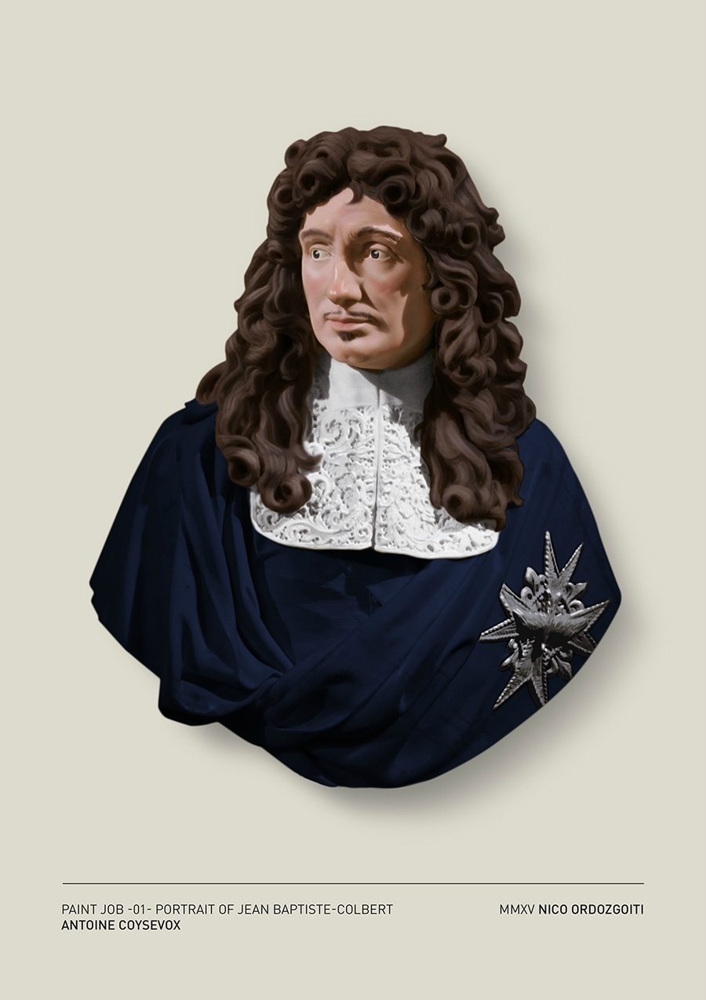
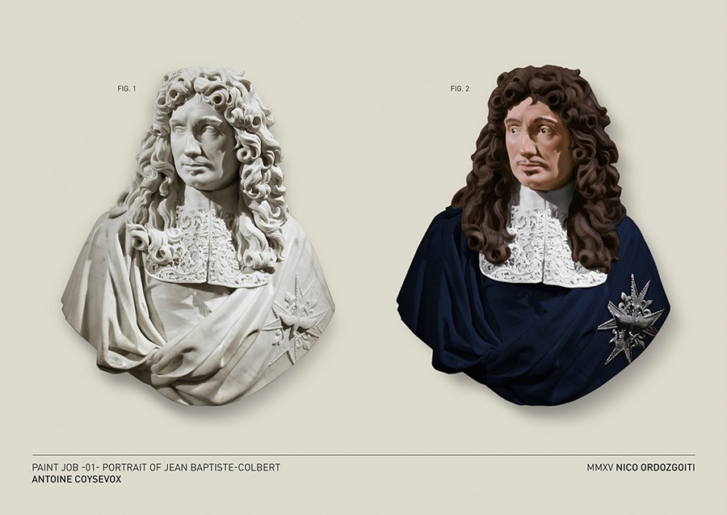

怪不到大家都喜欢黑白照片 //@考古书店:主页君俺果然还是不太愿意相信雕塑大多原本有色彩的事实。。。泪。。艺术还是做减法得好~~是不是自然与时间比人类更懂艺术//@四川广汉三星堆博物馆:世界上大部分的古代雕塑原本都是有颜色的，连我堆青铜人脸上都涂了红唇和眉毛@鹿妖视界:给古典雕塑上色～ 来自艺术家Nico Ordozgoiti 
 //@四川广汉三星堆博物馆:世界上大部分的古代雕塑原本都是有颜色的，连我堆青铜人脸上都涂了红唇和眉毛
//@四川广汉三星堆博物馆:世界上大部分的古代雕塑原本都是有颜色的，连我堆青铜人脸上都涂了红唇和眉毛